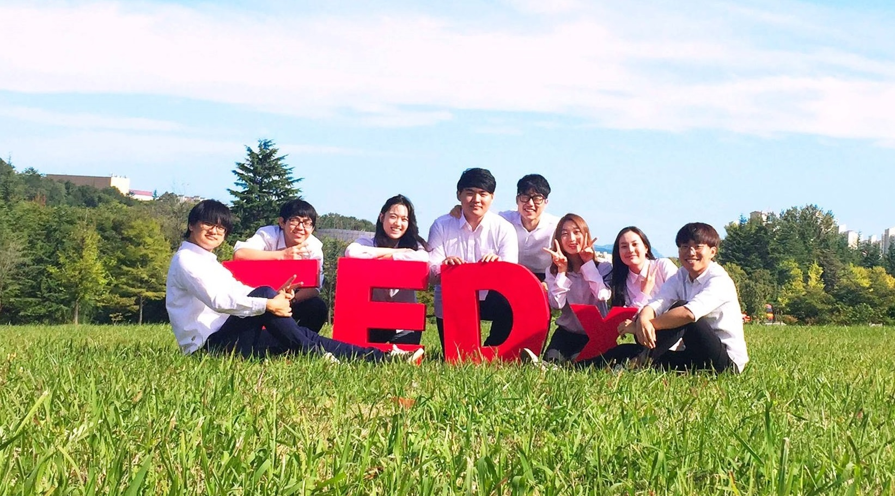

TEDxPOSTECH
Talk conference on the campus

My role: team building, sponsor and speaker contact, facilitating
Collaborator: Seewoo Lee, Jiwoo Kang, Beomsoo Lim, Jonggeon Lee, Sieun Park, Jaewon Yoo and Eunji Kwon
Pohang University of Science and Technology (POSTECH) is in Pohang, which makes it hard for students to meet a variety of ideas and people. To change that, my team organized the second TEDxPOSTECH, 4 years after the first event. As director, I assigned roles and responsibilities to organizers, contacted sponsors and speakers, and facilitated the event. Regular tickets sold out 50 seconds after sign-ups opened, and the team invited a professor, a writer, and a pop singer as speakers. The event was held on October 31, 2015, at POSCO International Conference Hall, under the theme 'question'. Sponsors were POSTECH, Penta security system, A Twosome Place, Domino Pizza, Cafe Rio, PBS, Poapper, Ramen Beravo, and Agit.
Human & Technology; Practicing Healthy Hybridity - Jintaek Kim
Jintaek Kim is a professor in the POSTECH Department of Creative IT Engineering. He thinks through the body and the senses and studies images, media art, and the transhuman.

Disconnected Society, Connected People - Seoyoon Choi
Seoyoon Choi is the editor of "Monthly Ingyeo" and has written for Hankyoreh 21, Sisa in Live, Hankook Newspaper, and Media Today.
How to Make Vision? - SeongJin Park
Seongjin Park is a professor in the POSTECH Department of Mechanical Engineering who studies micro manufacturing and multiscale simulation.
Why Human Seek for Unreachable Universe? - Jaechan Hwang
Jaechan Hwang is a professor in the Department of Astronomy and Atmospheric Sciences at Kyungpook National University. He is interested in cosmology, space biology, and the future of humanity.
Can Science Conquer The Cancer? - Seungwoo Lee
Seungwoo Lee is a professor in the POSTECH Department of Integrative Biosciences and Biotechnology who studies cancer treatment using the human immune system.
Finding The Story Without Knowing The Words - Lena Park
Lena Park is a popular singer in Korea. She debuted in 1998 with her first album, 'piece', and has released 8 albums since. She performs on many stages with her own perspective and technique.